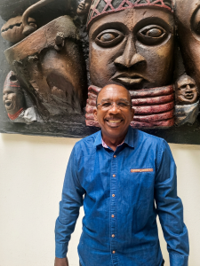

Managing Partner, JYGA Architects
Arc. Manilius Garber
Over 40 years practising architecture across Sierra Leone, Nigeria, Zimbabwe, Botswana and beyond — and a long-running argument for African architecture that looks inward.
The Journey In
Architecture was not the plan. As an A-Level science student, Garber assumed he was headed for medicine — until his mother, then principal of a girls' school in Freetown, steered him toward architecture instead and arranged a holiday job for him at the Ministry of Works' Architects Department. An early gift for art found a new outlet: not pictures on a wall, but buildings people would actually live in.
He studied at Ahmadu Bello University in Nigeria — originally planning to study in England, but redirected when Accra's School of Tropical Design closed and its lecturers moved to ABU instead. It turned into what he's described as a broad, formative education, including exposure to new-city planning and international figures like Kenzo Tange. From there he spent time in Lagos working under architect Adedokun Adeyemi, learning the practical importance of cross-ventilation and climate-responsive design, before completing a further degree in landscape architecture at the University of Edinburgh.

Practising Across Africa
Back in Sierra Leone, he joined Jarrett-Yaskey and Associates, eventually becoming a partner as the firm became Jarrett-Yaskey, Garber & Associates (JYGA). The country's civil war interrupted that continuity directly — his office was burned down by rebel forces, and he left the country, continuing his career in Zimbabwe with a major architectural practice before establishing an architectural arm of an engineering firm in Botswana. He eventually returned to Sierra Leone and to JYGA, carrying the climate and cultural lessons of each posting back with him — from fireplace-driven residential design in Southern Africa's winters to the very different demands of Freetown's humid, hillside terrain.
On African Architecture
Garber's central argument is that African architecture has spent too long importing models wholesale rather than developing its own — not by decorating buildings with surface-level "African" motifs, but by studying how people on the continent actually use space, and designing around that. He points to architects like Diébédo Francis Kéré and Kunle Adeyemi's floating school in Makoko as examples of design responding to real local need rather than borrowed form.
He's skeptical, though, that a single "indigenous African architecture" exists at all — Africa's climates and cultures are too varied for one answer. What works in a dry, Saharan context won't necessarily work in a hot, humid one. His preferred model is hybridisation: the way countries like Malaysia and Singapore adapted Western education systems into something of their own, rather than rejecting outside influence outright.
“Africa has to start engaging with Africa.”
Arc. Manilius GarberThe Reality of Practice
He's candid that ideals meet limits in practice — a client sets the brief, and pays for it. He describes long-running frustration with clients importing classical, heavily-columned styles with no real connection to the continent, while acknowledging he's designed them anyway when asked: if a client wants it, the job is to do it properly. Post-war reconstruction work — including the state-owned Bintumani International Conference Centre, destroyed by rebels and later refurbished by JYGA — was complicated further by the loss of a generation of skilled tradespeople during the conflict.
His broader frustration extends to Freetown itself, which he considers to have outgrown its own capacity, and to the state of West African architectural collaboration generally — his consistent call is for architects across the region to work across borders with each other, rather than routing every opportunity and every solution through the West.
Notable Work
Career highlights referenced in his own account of the work include the LEED Gold-certified World Bank Group Sierra Leone Country Office, the Lumley Beach masterplan (modelled in part on Rio de Janeiro's Copacabana), the Bintumani International Conference Centre refurbishment, and supervising-architect work on a Church of Jesus Christ of Latter-day Saints temple project — alongside further work across Zambia, Mozambique, the Seychelles and Nigeria.